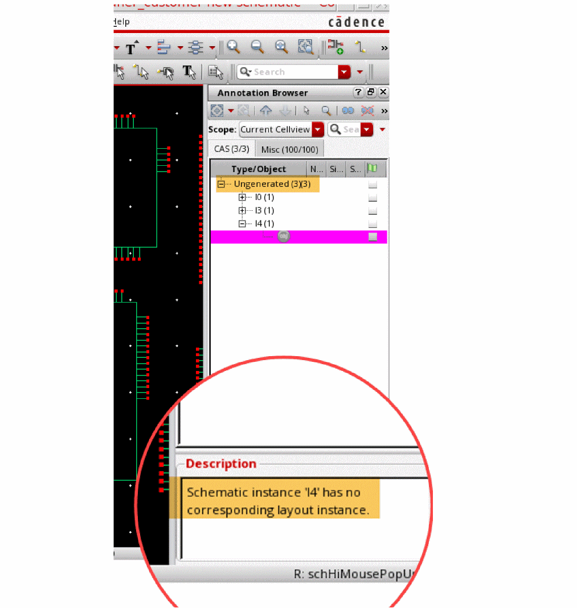
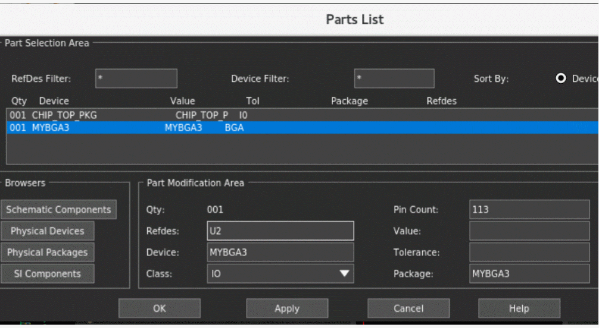
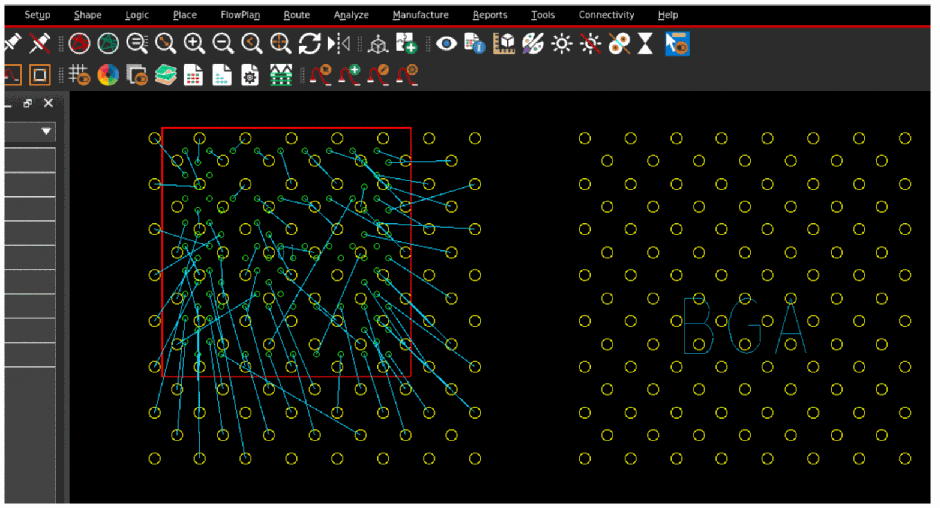
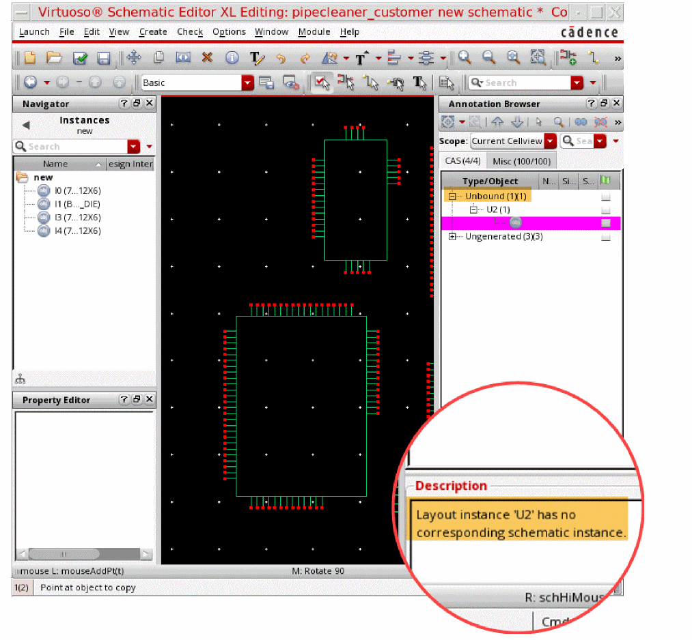

Checking Against Source Schematic
To check against the source schematic:
- Click a blank portion of canvas to undo any selection in Virtuoso Schematic Editor.
- Choose Edit – Copy.
- In the canvas, select an instance and copy.
-
Choose Connectivity – Check Against Source in the SiP layout.
The Annotation Browser opens in the Virtuoso Schematic Editor. -
In the Annotation Browser, expand the Ungenerated list. Note the Description field.
 - Click Connectivity – Update Components and Nets in the SiP layout. The Annotation browser removes the mismatched instances.
- Choose Logic – Edit Parts List in the SiP layout.
-
In the Parts List form, click a device and update its
Refdesvalue toU2.
 -
Click Place – Manually and place
U2.
 - Click Connectivity – Check Against Source in the SiP layout. The Annotation Browser opens in the Virtuoso Schematic Editor.
-
In the Annotation Browser, expand the Unbound list. Note the Description field.
U2is not recognized in the corresponding schematic and an error is reported.

Related Topics
Generating a SiP Layout from a Source Schematic
Return to top